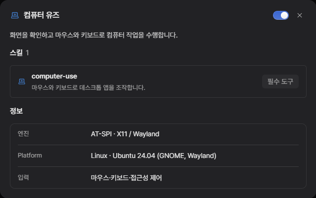
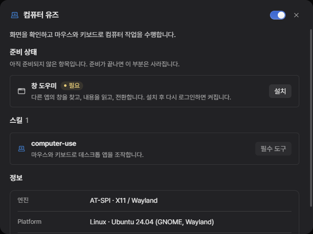
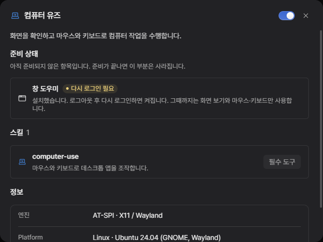
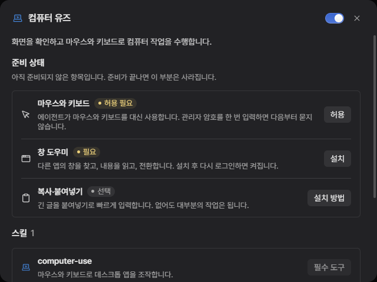
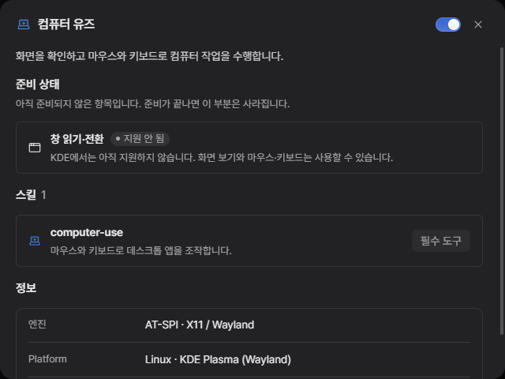
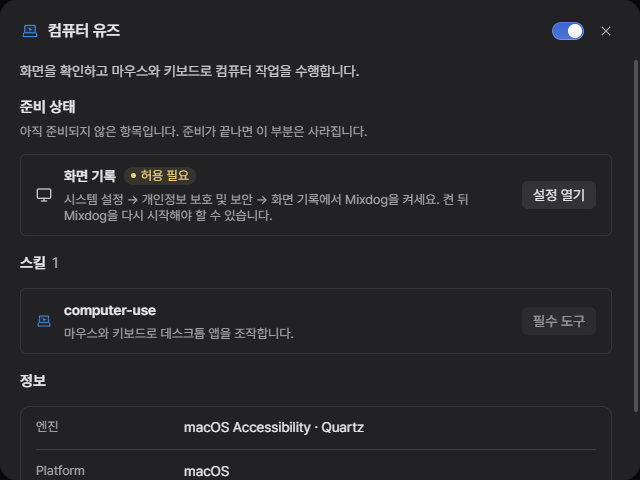
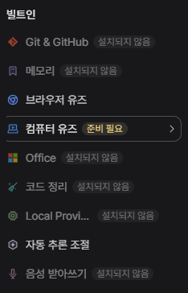
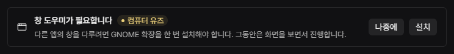
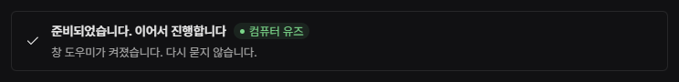

개발용 앱의 실제 화면(익스텐션 → 빌트인 → 컴퓨터 유즈)에 새 부분만 끼워 넣고 찍었습니다. 모양·간격·글자는 모두 앱의 실제 부품(ExtensionSection, ExtensionItemRow, extensions-action, sidebar-resource-tag)과 같습니다. 문구는 합니다체입니다.
.deb는 마우스·키보드 입력 허용과 복사·붙여넣기·글자 인식 도구를 설치 단계에서 끝냅니다. 사용자가 할 일 없음.설치 단계에서 입력 허용이 끝나 있으므로, 남는 건 GNOME 창 도우미 하나뿐입니다.



같은 틀에서 줄만 달라집니다. 못 하는 건 못 한다고 그대로 씁니다.



목록 태그는 지금 "설치되지 않음"이 붙는 자리와 같은 부품입니다. 대화 카드는 처음 실제로 필요할 때 한 번만 나옵니다.



| 자리 | 문구 |
|---|---|
| 준비 상태 설명 | 아직 준비되지 않은 항목입니다. 준비가 끝나면 이 부분은 사라집니다. |
| 창 도우미 | 다른 앱의 창을 찾고, 내용을 읽고, 전환합니다. 설치 후 다시 로그인하면 켜집니다. |
| 창 도우미 · 설치 후 | 설치했습니다. 로그아웃 후 다시 로그인하면 켜집니다. 그때까지는 화면 보기와 마우스·키보드만 사용합니다. |
| 마우스와 키보드 (AppImage) | 에이전트가 마우스와 키보드를 대신 사용합니다. 관리자 암호를 한 번 입력하면 다음부터 묻지 않습니다. |
| 복사·붙여넣기 (선택) | 긴 글을 붙여넣기로 빠르게 입력합니다. 없어도 대부분의 작업은 됩니다. |
| KDE | KDE에서는 아직 지원하지 않습니다. 화면 보기와 마우스·키보드는 사용할 수 있습니다. |
| macOS 화면 기록 | 시스템 설정 → 개인정보 보호 및 보안 → 화면 기록에서 Mixdog을 켜세요. 켠 뒤 Mixdog을 다시 시작해야 할 수 있습니다. |
| 대화 카드 | 창 도우미가 필요합니다 · 다른 앱의 창을 다루려면 GNOME 확장을 한 번 설치해야 합니다. 그동안은 화면을 보면서 진행합니다. |
| 대화 카드 · 준비됨 | 준비되었습니다. 이어서 진행합니다 · 창 도우미가 켜졌습니다. 다시 묻지 않습니다. |